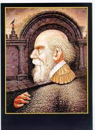
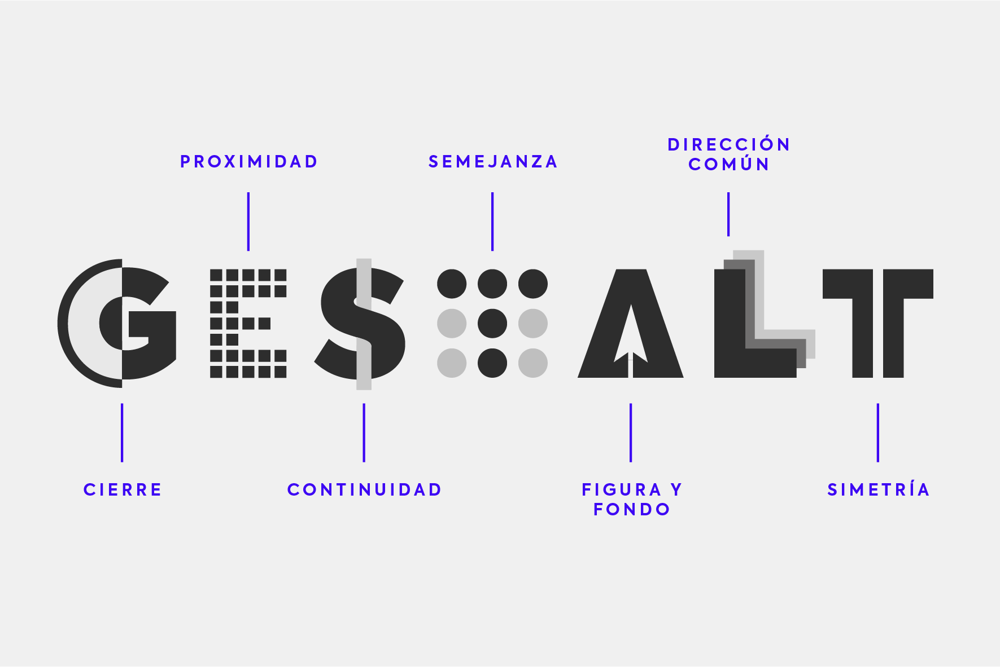
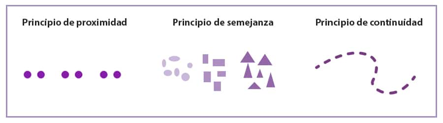

Teoría de la Percepción (Gestalt)
La teoría de la Gestalt apareció en la Alemania de principios de siglo XX como reacción a la psicología conductista, que rechazaba la consideración de los estados subjetivos de consciencia a la hora de investigar sobre el comportamiento de las personas y ponía énfasis en los efectos que el contexto familiar, y por extensión social y cultural, tiene sobre nosotros. A diferencia de los conductistas, los investigadores que se adscribían a la teoría Gestalt se preocupaban básicamente por estudiar los procesos mentales que por aquella época se consideraban algo fundamentalmente invisible, al no existir herramientas para llegar a conocer bien lo que ocurriçá en el cerebro.
De este modo, la teoría de la Gestalt nos acerca a una concepción del ser humano caracterizado por su papel activo a la hora de percibir la realidad y tomar decisiones. Según los gestaltistas, todos creamos en nuestra mente imágenes más o menos coherentes sobre nosotros y lo que nos rodea, y estas imágenes no son la simple unión de las secuencias de información que nos llegan a través de nuestros sentidos, sino que son algo más.

¿Porqué Gestalt?

La palabra alemana Gestalt, que muchas veces se traduce al español como "forma", representa este proceso por el que construimos marcos de percepción de la realidad: todas las personas interpretamos la realidad y tomamos decisiones sobre ella en base a estas "formas" o "figuras" mentales que vamos creando sin darnos cuenta. La teoría de la Gestalt se centra en dar explicaciones acerca de nuestra manera de percibir las cosas y tomar decisiones a partir de las "formas" que creamos.
El concepto de la forma


 Algunas escuelas de la psicología consideran que las representaciones mentales que se crean en nuestra consciencia son la suma de piezas de imagen, sonido, tacto y memoria. De este modo, el conjunto de estos paquetes de información que van llegando desde los sentidos se sumarían en nuestro cerebro y de esa superposición de unidades aparecería lo que experimentamos.
La teoría de la Gestalt, sin embargo, niega que exista un "todo" perceptivo que esté compuesto por el conjunto de datos que van llegando a nuestro cuerpo. Por el contrario, propone que lo que experimentamos es más que la suma de sus partes, y que por lo tanto existe como un todo, una figura que sólo puede ser considerada entera. Así pues, lo que ocurre es que la globalidad de nuestras "formas" mentales se impone a lo que nos va llegando a través de los sentidos, y no al contrario.
Según este enfoque, aprendemos acerca de lo que nos rodea no sumando el conjunto de piezas de información que nos llegan a través de los sentidos, sino a partir de las "figuras" que se crean en nuestra mente. Por ejemplo, desde la teoría de la Gestalt que se utiliza en la terapia Gestalt creada por Fritz Perls (que no es exactamente lo mismo que la psicología de la Gestalt, más antigua que esta) se proponen formas de psicoterapia en las que el objetivo es que el paciente pueda comprender ciertos problemas en un sentido global que sea distinto a como lo hacía anteriormente y que le permita desarrollar sus potencialidades.
Así pues, según la teoría de la Gestalt las personas no seríamos recipientes de sensaciones varias, sino que nuestra mente estaría compuesta por diferentes totalidades. Para los gestaltistas no es necesario centrarse en las piezas de las que parecen estar formadas nuestras figuras mentales acerca de cualquier cosa para solucionar un conflicto o adoptar una mentalidad más útil, sino que lo que hay que procurar es alcanzar una comprensión estructural nueva de lo que ocurre.
Algunas escuelas de la psicología consideran que las representaciones mentales que se crean en nuestra consciencia son la suma de piezas de imagen, sonido, tacto y memoria. De este modo, el conjunto de estos paquetes de información que van llegando desde los sentidos se sumarían en nuestro cerebro y de esa superposición de unidades aparecería lo que experimentamos.
La teoría de la Gestalt, sin embargo, niega que exista un "todo" perceptivo que esté compuesto por el conjunto de datos que van llegando a nuestro cuerpo. Por el contrario, propone que lo que experimentamos es más que la suma de sus partes, y que por lo tanto existe como un todo, una figura que sólo puede ser considerada entera. Así pues, lo que ocurre es que la globalidad de nuestras "formas" mentales se impone a lo que nos va llegando a través de los sentidos, y no al contrario.
Según este enfoque, aprendemos acerca de lo que nos rodea no sumando el conjunto de piezas de información que nos llegan a través de los sentidos, sino a partir de las "figuras" que se crean en nuestra mente. Por ejemplo, desde la teoría de la Gestalt que se utiliza en la terapia Gestalt creada por Fritz Perls (que no es exactamente lo mismo que la psicología de la Gestalt, más antigua que esta) se proponen formas de psicoterapia en las que el objetivo es que el paciente pueda comprender ciertos problemas en un sentido global que sea distinto a como lo hacía anteriormente y que le permita desarrollar sus potencialidades.
Así pues, según la teoría de la Gestalt las personas no seríamos recipientes de sensaciones varias, sino que nuestra mente estaría compuesta por diferentes totalidades. Para los gestaltistas no es necesario centrarse en las piezas de las que parecen estar formadas nuestras figuras mentales acerca de cualquier cosa para solucionar un conflicto o adoptar una mentalidad más útil, sino que lo que hay que procurar es alcanzar una comprensión estructural nueva de lo que ocurre.
¿Ejemplos para entender la idea de "forma"?
Un ejemplo de esto lo podemos encontrar en las películas. A pesar de ser una sucesión de fotografías que pasan rápidamente, nosotros las percibimos como algo muy distinto: una secuencia de imágenes en movimiento.
A pesar de que esta cualidad (el movimiento) no esté presente en las distintas imágenes, lo que experimentamos es una globalidad que sí tiene esta propiedad. Desde la perspectiva de la teoría de la Gestalt esto es así porque creamos formas globales sobre la realidad que nos rodea, en vez de limitarnos a recibir pasivamente la información que le llega de todas partes y reaccionar en consecuencia.
Lo mismo queda manifestado claramente cuando vemos esas ilusiones ópticas en las que aparecen dos o más imágenes superpuestas pero no somos capaces de ver más de una a la vez: la globalidad de la figura parece apoderarse de nuestros sentidos.
Las leyes de la forma
Dentro de la teoría de la Gestalt se han ido formulando leyes que explican los principios por los que dependiendo del contexto en el que nos encontremos percibimos ciertas cosas y no otras. Estas son las leyes de la Gestalt, que fueron propuestas en un inicio por el psicólogo Max Wertheimer, cuyas ideas fueron desarrolladas y reforzadas por Wolfgang Köhler (en la imagen) y Kurt Koffka.
La ley más importante y que nos da una mejor idea sobre la lógica por la que se rige la generación de percepciones como un todo es la ley de la buena forma, según la cual lo que percibimos con mayor exactitud y rapidez son aquellas formas más completas pero, al mismo tiempo, más simples o simétricas.

Fuente
https://psicologiaymente.com/psicologia/teoria-gestalt